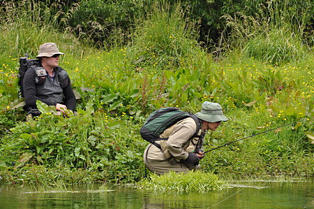
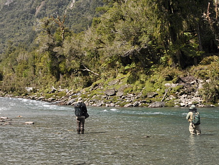
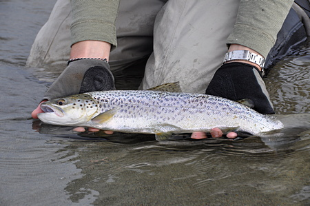
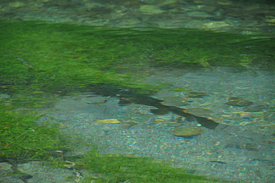
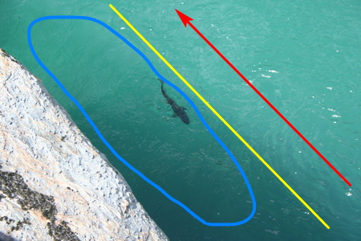
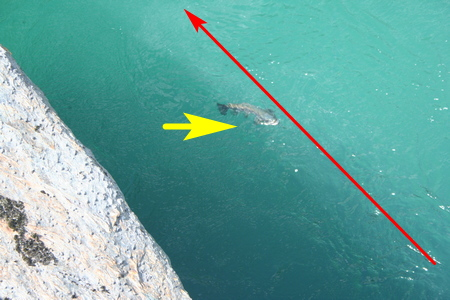
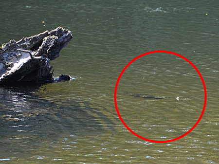

ティップス
ニュージーランド ティップス集
南島西海岸でのブラウントラウト釣りのコツ
2010年に南島西海岸をブリントさんのガイドで釣り歩いた時、インタビューをして、彼の地でのブラウントラウト釣りのコツを伺いました。その YouTube 動画 Fly fishing tips for brown trout of NZ の文字起しをしたので以下に載せておきます。どうぞ参考にして下さい。
ウェストランド（ニュージーランド南島西海岸）でブラウントラウトをフライで釣るのに最も重要な点は、リーダーの長さです。リーダーとティペットを合わせた長さが、最低でも14～18フィート必要になります。
ブラウントラウト、特に、以前に釣られたことのあるブラウンは、フライラインが水面を叩く音にとても敏感です。彼らにはその音が聞こえるのです。ですから、ソフトなプレゼンテーションであれば、フライの着水音は聞こえません。
第二に、ブラウントラウトへのアプローチです。あなたは川を歩いていて、前方、すなわち上流側に彼らを見ているわけです。後ろからこっそりと、彼らの視界が限られている、「フィッシュ・ウィンドウ」の外側へと近づいて行けばいいのです。

姿勢を低くし、目立たない服装で、
静かに、慎重にアプローチそして、その行動の間は、水中で音を立てないようにします。そうすれば、流れの横切ることなく、あなたが必要としていた位置で、プレゼンテーションのチャンスを得ることができます。

細心の注意を払い、ごく静かに
フライをプレゼンテーションするそして最後に、トラウトに与える餌（＝フライ）には、重さを持たせて、魚の定位している深さまで沈める必要があります。なぜなら、魚がある角度（おそらく、やや下向き）でニンフを捕食している時には、しばしば浮いて流れて来るドライフライを見ていないからです。
さらに、あまりに遠く横に離れた筋を流れているニンフも、鱒の眼に入らないでしょう。
そのためには、魚の泳いでいる水深に合わせて、魚が、少しだけ横に移動して餌を捕らえることができる筋に、正確にニンフを流す必要があるのです。
ドライフライの注意点
同じドライフライを２回使用したら、フライを交換します。２回以上続けて同じフライを使ってはいけません。
その後、必要に応じて別のドライフライを２回だけプレゼンテーションします。それでも興味を示さない場合は、ニンフを使います。つまり、まずドライフライで水面上を釣り、次にニンフで水中を釣るのです。
そして、すべての試みが失敗してしまい、ブラウントラウトが反応しない場合には、ドライでもウェットでも、フライボックスに入っている中で、最も奇抜なフライを使います。特に、小さなストリーマー・パターンをキャストし、ストリッピングして目の前を横切らせると、鱒はすぐに反応することが多いです。
しかし、一般的に、海から遡上して来た降海型ブラウンたちは、ドライフライやニンフが何であるかを知りません。それでも、ストリーマー・パターンは確実に知っています。なぜなら、それまで連中は小魚を餌にしていたからです。

河口近くでキャッチした降海型ブラウン。体色が銀色に輝くところが、河口からホワイトベイトが遡上して来なくなると、河口域での降海型ブラウンの釣りシーズンは急に低調なものになります。その時点でブラウンたちは上流へと移動し始め、他のタイプの餌を捕食し始めます。そこで、ドライフライやニンフの出番となるわけです。
しかし、考慮しなければならないことは、まだまだたくさんあります。
ウェーディングシューズにクリート（鋲）を付けたり、水中でウェーディングスタッフを使ったりすれば、石がゴロゴロしている川底にいるブラウントラウトは、すぐにそれを聞きつけて逃げてしまいます。
もし、サイトフィッシングをしていて、発見したブラウントラウトの尾ビレがユラユラと動いていれば、フライを何回交換させられたとしても、釣り上げられる可能性があります。

ヒレをユラユラと動かして、リラックスモードの
ブラウントラウト。スプリングクリークにて。しかし、もしトラウトの魚体が硬直しているように見えたなら、それはショック（警戒）モードに入った証拠で、逃げ出そうとしている可能性がありますし、きっとそうなるでしょう。だからこそ、あなたは慎重に彼らを釣らなければならないのです。
ブラウントラウトを何度も釣っていると、彼らの動きを観察することができ、何日か前に釣り上げられた魚であれば、その反応でわかるようになります。しかし、考慮すべき点は本当にたくさんあります。
ブラウントラウトのもう一つの特徴は、彼らは基本的に怠惰な捕食者であるということです。エネルギーをなるべく使わずに済むように、ゆっくりと流れる水の中に体を置き、流れの速いところに鼻先と口とを入れて餌を捕ります。

水面下、30cm ほどに定位しているブラウン。
赤矢印が主流、黄色い線がシーム（流れの縫い目、境界）、
青線の丸が緩流帯。
主流の上に餌が流れて来ると、緩流帯から
横に動くと同時に水面に浮上して捕食する岩の前後、丸太の前後など、エネルギーを必要以上に消費しない、シーム（流れの縫い目、境界）と呼ばれる場所の緩流部側へと戻って行きます。こういった、流れが砕け、途切れ、淀みが出来ているところならどこにでも居付くのです。

倒木の上流側に居付いていたブラウンがセミフライに近づくそして、暑い時期（11～2月）には、魚は水が温かくなったエッジ（急流と緩流部の境界部）にはあまりいなくなり、酸素が多く溶け込んでいる、冷たい水の瀬に居付くようになります。
まぁ、そんな感じで、これらを話せばキリがありません。でも、いくつかの重要な点についてはお話しできました。
聞いてくれてありがとう。
ティップス 目次へ
サイトマップ
ホームへ
お問い合わせ